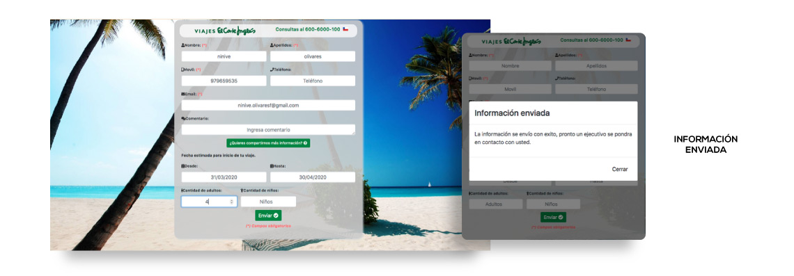

- Herramientas
- User person - Mapa de empatía
- Customer Journey Map
- Rol en el equipo
- Objetivo
Diseñadora UX / UI
Desarrollar una plataforma que permita verificar el estado de salud físico y emocional de adultos mayores y conocer si tienen necesidades que deban suplementarse.
EYMI: La plataforma que te ayuda a cuidar a los adultos mayores
Aquí hay que decir que donde se enmarca el proyecto, que trata del quienes se encargan del cuidado del am y el contexto de pandemia y la lejania con parientes, ademas de la solución
Etapas del desarrollo del proyecto
En conjunto con el equipo propusimos 5 hitos importantes para el desarrollo de este proyecto, que se muestran a continuación:
- HITO 1: Entendiendo el problema
- HITO 2: Organizar la información
- HITO 3: Diseñar la interacción
- HITO 4: Diseñar la interfaz de usuario
HITO 1: Entendiendo el problema
Muchas de las personas de tercera edad cuentan con la asistencia de un cuidador, ya sea un familiar designado a su cuidado, o un profesional contratado, quién cumple un rol significativo para el bienestar del anciano y la tranquilidad de su grupo familiar.
Por otro lado, también es quien debe enfrentar momentos críticos relacionados al estrés que conlleva el cuidado de estos, y en algunas ocasiones, la falta de comunicación con la familia o tutores.

Actualmente, debido a la contingencia generada por la pandemia y la necesidad de mantener el distanciamiento social, se ha vuelto más difícil que las personas del entorno familiar puedan estar en contacto directo con los adultos mayores y en consecuencia con sus cuidadores.
Este nuevo desafío lleva a plantearse un nuevo escenario de atención a distancia, en el cual la tecnología cumple un rol fundamental, ya que extiende podría extender puentes entre los adultos mayores, sus cuidadores, su entorno de familiares u otras personas cercanas.
Para la obtención de data cualitativa se llevaron a cabo entrevistas con el fin de conocer desde la experiencia de cuidadores de adultos mayores, como se constituyen y organizan las rutinas de cuidado del adulto mayor y las dificultades que se pueden presentar en la asistencia de estos.
A continuación, se muestran extractos significativos obtenidos de entrevistas:
"Cuando un adulto mayor necesita atención diaria es por que está muy solo y corre algún tipo de riesgo de caída o de accidente".
Fabiola Briones, 31 años
Kinesiólogo, magíster en Gerontología
Ha trabajado en residencias de adultos
mayores.
“Hay una hoja de registro donde se van anotando todo lo que se le hace al paciente y su desarrollo durante el día".
Sara Yáñez, 63 años
Técnico paramédico
Tiene a cargo la alimentación de un adulto mayor.
"Lo primero es la salud. Si se siente mal emocionalmente (porque son como un niño), llamarla, preguntarle si tomó desayuno, a qué hora almorzó, a qué hora se bañó, cosa muy normal en familia”.
Romina Catalán, 32 años.
Cuida a su mamá
A partir de la realización de la entrevista, se pudieron identificar y segmentar los usuarios de esta aplicación.
Heavy User: Cuidador del adulto mayor. Es la persona que se encarga en primera instancia de asistirlo diariamente, quien podría ser un familiar o una persona contratada para hacerse cargo.
Medium User: Profesionales relacionados al área de la salud o cuidado del adulto mayor, quién deba requerir de los datos que informa el cuidador.
Light User: Personas de la red de apoyo del adulto mayor. Esta red de apoyo se forma de familiares, vecinos u otras personas cercanas quienes monitorean, supervisan o ayudan al adulto mayor ocasionalmente.
Como se mencionó en un comienzo, la aplicación se enfoca en primera instancia al Heavy User, el cuidador, ya que es quién se encargará de realizar la mayor parte de tareas en la aplicación.
A continuación, se muestra el arquetipo Heavy User extraído a partir de los insights obtenidos de las entrevistas.
Definición del Proyecto
Plataforma web y aplicación de registro y asistencia para cuidadores de adultos mayores.
Objetivo
Desarrollar una plataforma que permita verificar el estado de salud de adultos mayores y conocer las necesidades cotidianas que deban suplementarse.
Alcance
Plataforma de registro y asistencia: Permitirá al cuidador llevar un registro de tareas diarias, estados de ánimo y reportes de salud, además de solicitar asistencia de red de apoyo.
Público objetivo
Personas y/o instituciones que atienden adultos mayores y que realizan seguimiento de su estado de salud físico y emocional, además de sus necesidades diarias.
| Objetivo: Solicitar asistencia para el adulto mayor en la aplicación y en la web. |
|---|
Touch points
|
KPI
|
| Objetivo: Llamar a un contacto de la red de apoyo a través de la aplicación. |
Touch points
|
KPI
|
| Objetivo: Consultar reportes de salud y psicológico en la aplicación y en la web. |
Touch points
|
KPI
|
HITO 2: Organizando la información
Las aplicaciones destinadas al cuidado del adulto mayor que existen en la actualidad se enfocan solo en algunos puntos que este proyecto pretende abarcar, por lo que se eligieron las aplicaciones que presenten funcionalidades similares a lo que pretende el proyecto.
Mediante un benchmark se analizaron aspectos de contenidos, estructura y funcionalidades de estas aplicaciones.
Flujo de interacción
HITO 3:
WireframeHITO 4
UI KIT PROTOTIPO TEST DE USABILIDAD|||||||||Inicia desde el teléfono móvil
La tarea sigue y finaliza en desktop
Partitura de interacción


Observaciones y recomendaciones del Equipo UX
Tras el análisis expuesto anteriormente, se concluyó que los puntos negativos durante la navegación del usuario en el sitio web, se relacionan principalmente con los tiempos de carga, errores de códigos del sitio y la información recibida sobre el servicio.
En el caso de este formulario, el problema se presentó en no poder finalizar la operación desde el teléfono móvil por un error de códigos en el campo de validación de email.
Por otro lado, se identificó la falta de mayor detalle en la información de la cotización enviada, lo que posiblemente lleve a que el usuario se comunique por otra vía con la empresa, o se decida por los servicios de otra empresa.